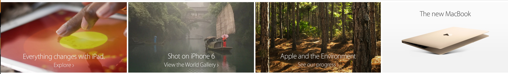
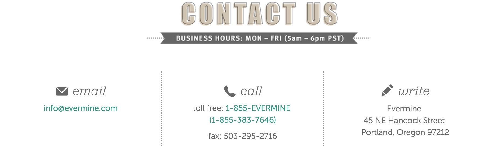

Hello,
My name is Brittni Carter. I am a 27 year old Full Sail University Student with previous degrees in advertising and communications.
I currently live in Michigan where I work from home as a social media specialist.
Below is my list of components:
Header
Hammerhead is a device made for cyclists that attaches to their bikes like a compass and supplies the user with routes. There target audience would be upper middle class males in their late 20s and 30s.
The goal of their site is to inform cyclists of their product. The site itself is pretty basic but if you were unfamiliar with the product you would have a hard time figuring out what it does.
What I like about their header is that not only does it move as you scroll but it fades out while scrolling and appears once you stop scrolling. The idea of having a "sticky" header makes it easier for the user without having to scroll all the way to the top for the navigation options.
The header is simple, a black bar with white text that turns green when you hover. The orange rounded box around the Pre Order option grabs the users attention. http://hammerhead.io/
CTA
HubSpot is very popular in the digital marketing world. Hubspot targets marketers and people who work in the digital marketing world. Their website offers tips, tricks, webinars and information on products they have available.
Their website call to action buttons, are upfront and out in the open. The orange looking ping pong balls in the background really
catch the users attention and draw you in. The blue button pops off the page with a call to action to watch their video.
http://www.hubspot.com/
Features
Apple has become a HUGE brand. Their branding and design is known worldwide. Their target audience would be tech savy upperclass and middle class individuals.
Their products are costly compared to their competitors but always very trendy. The features section on their homepage is broken into rectangular sections with images in the background and white text on top.
This section is for their currently popular and newest items.

https://www.apple.com/
Agencies almost always have great websites, I'm sure it's one of the first places potential clients look before choosing an agency.
Blitz Agency has a really interesting website. It's hard to describe but it seems like there is a lot of animation work involved.http://www.blitzagency.com/
About
Mail Chimp has been around for a few years now and is one of the leaders in their field. Their target audience is business owners and marketers that don't
have the budget for larger email marketing programs. They use a playful monkey as their logo and fill their pages with bright colors on a white background.
It's easy to use and it's FREE. Their goal is to help users create email campaigns and build lists that they can charge them for.
It's really nice when companies show you the faces behind the brand and their "About Us" page does that. http://mailchimp.com/about/
Blog
What first caught my attention about the Milk The Pigeon blog was the name.
This blog is about life for lost people and those trying to figure life out in their twenties.
Design doesn't seem like it was important when this site was created because there isn't much to it.
The message seems to be the most important aspect, each article is listed as you scroll down with a picture included. http://milkthepigeon.com/
Contacts
Evermine is a site that targets newly engaged women in their early 30s. Women that are looking for wedding invitations, party favors etc.
Soft warm colors that one might see at a wedding are used throughout the site. The contact us page is no different. There is a contact us header with the business hours
in a banner underneath in smaller text. Under that there are three columns with the email, phone and address information.

https://www.evermine.com/help/
Login/Registration
This site is for people who like designer clothing but don't like the designer price tag. Targeting on the go, middle class and upper class men and women in their 20s and 30s.
Gilt is a site that sells designer clothing at a discounted price. The sales change daily, offering a variety of items for babies, men, women and home.
Their login page always has a different background image when a user logs in. Usually the images are dependent on the season and trends. There is a small box in the center
of the page directing the user to sign in with their email address and password. Underneath the input boxes the user can click a link if they forgot their password, login with their facebook account or sign up for an account.
The login is quick and easy, they know their users don't have the time for long forms.https://www.gilt.com/login
Footer
Footers don't need a lot of content, too many words or links could be confusing. DailyTekk has a simple and direct footer.
It's clean and simple, just the basic links. The site is for people interested in Tech news, it even features product reviews.
The site itself is reminiscent of Mashable with the clean lines, white background and a simple shade of blue. The white really lets the article images jump out at the viewer.

 http://hammerhead.io/
http://hammerhead.io/
 http://www.hubspot.com/
http://www.hubspot.com/
 http://mailchimp.com/about/
http://mailchimp.com/about/
 http://milkthepigeon.com/
http://milkthepigeon.com/
 https://www.gilt.com/login
https://www.gilt.com/login
 http://dailytekk.com/
http://dailytekk.com/